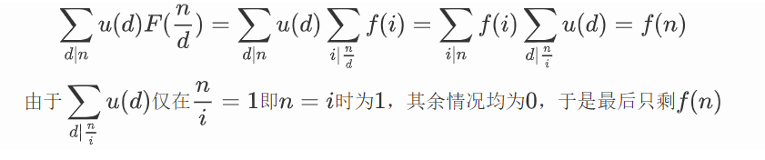
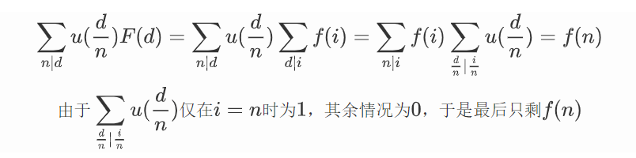

积性函数与莫比乌斯反演
定义
对于函数\(f(x)\) ，若满足\((p, q) = 1\)，且\(f(p \times q) = f(p) \times f(q)\)，则称\(f(x)\)为完全积性函数
常见积性函数
- 正因子个数函数：\(d(x)\)
- 欧拉函数(1 - n内与n互质的数的个数)：\(phi(x)\)
- 莫比乌斯函数：\(u(x)\)
线性求积性函数模板题
线性求\(d(x)\)
1 2 3 4 5 6 7 8 9 10 11 12 13 14 15 16 17 18 19 | |
线性求\(phi(x)\)
1 2 3 4 5 6 7 8 9 10 11 12 13 14 15 | |
线性求\(u(x)\)
1 2 3 4 5 6 7 8 9 10 11 12 13 14 15 16 17 18 | |
莫比乌斯反演
使用到的莫比乌斯函数的性质
简单证明： $$ 假设n = a_1^{p1}\times a_2^{p2} ... \times a_k^{pk} (a1,a2...ak均为质因子)\ 令n' = a_1\times a_2 ... \times a_k\ 则\sum_{d|n}u(d) = \sum_{d|n'}u(d) = \sum_{i}^{k} C_k^i * (-1)^i = 0\ 当n=1时,有\sum_{d|1}u(d)=u(1)=1 $$
莫比乌斯反演
- 若\(F(n) = \sum_{d|n}f(d)\)，那么\(f(n) = \sum_{d|n}u(d)F(\frac{n}{d})\)
- 若\(F(n) = \sum_{n|d}f(d)\)，那么\(f(n) = \sum_{n|d}u(\frac{d}{n})F(d)\)
一式证明：

二式证明：

例题
洛谷 P3455 [POI2007]ZAP-Queries
题目意思可化简为：
\(求\sum_{x = 1}^{a}\sum_{y=1}^{b}[gcd(x, y) == 1]\)
题解：
设\(f(n)\)为以上式子的值，我们假设\(F(n)\)是在此范围内\(gcd(x, y)\)为\(n或n的倍数\)的个数，则有\(F(n) = \sum_{n|d}f(d)\),已知此时\(F(n)=\lfloor\frac{a}{n}\rfloor\times\lfloor\frac{b}{n}\rfloor\),均向下取整，由莫比乌斯反演可以得出\(f(n)=\sum_{n|d}u(\frac{d}{n})F(d)\)，答案继为\(f(n)\),此时我们枚举\(\frac{d}{n}\)的值，令其为\(t\)，则\(d=t\times n\)，原式可化为\(f(n)=\sum_{n|d}u(\frac{d}{n})\times \frac{a}{d}\times \frac{b}{d}=\sum_{t=1}^{min(a, b)}u(t)\times \frac{a}{nt}\times \frac{b}{nt}\)，最后利用数论分块进行优化即可
代码
1 2 3 4 5 6 7 8 9 10 11 12 13 14 15 16 17 18 19 20 21 22 23 24 25 26 27 28 29 30 31 32 33 34 35 36 37 38 39 40 41 42 43 44 45 46 47 | |
洛谷 P2257 YY的GCD
题目可简化为：
\(求\sum_{P}^{P\le min(n, m)}\sum_{x = 1}^{N}\sum_{y = 1}^{M}[gcd(x, y) == P]\)
题解:
若想化为上一题的形式，我们需要改变枚举变量，将枚举\(x, y\)改变为枚举\(x,y\)的倍数，即后面两个\(\sum\)变为\(\sum_{x=1}^{\frac{N}{P}}\sum_{y=1}^{\frac{M}{P}}[gcd(x,y)==1]\)，同上题一样的套路进行化简， $$ f(n)=\sum_{n|d}u(\frac{d}{n})\times\lfloor\frac{N}{Pd}\rfloor\times \lfloor\frac{M}{Pd}\rfloor $$
我们需要的是 $$ res = \sum_{P}^{P\le min(N, M)}f(1)=\sum_{P}^{P\le min(N,M)}\sum_{d}u(d)\times\lfloor\frac{N}{Pd}\rfloor\times\lfloor\frac{M}{Pd}\rfloor $$ 我们发现若直接计算只能得到一半的分数，于是考虑优化，由于\(Pd\)十分丑陋，将\(Pd\)设为\(t\)，枚举\(d\)变为枚举\(t\)，并互换枚举顺序，此时\(P\)的范围变成了\(P|t\) $$ res = \sum_{t=1}^{min(N,M)}\sum_{P|t}^{P∈prime}u(\frac{t}{P})\times\lfloor\frac{N}{t}\rfloor\times\lfloor\frac{M}{t}\rfloor=\sum_{t=1}^{min(N,M)}\lfloor\frac{N}{t}\rfloor\times\lfloor\frac{M}{t}\rfloor\sum_{P|t}^{P∈prime}u(\frac{t}{P}) $$
对于\(\sum_{P|t}^{P∈prime}u(\frac{t}{P})\)，我们需要预处理他的前缀和，在配合整除分块，就能过了
接下来讲讲怎么求前缀和，考虑线性筛，我们设其为\(f(n)\)
在线性筛的过程中，若\(n\)为\(prime\)，易得\(f(n)=u(1)=1\)
若\(n\)非质数，考虑\(n=i\times p\)
若\(i\%p=0\)时
\(i=p_1^{a1}\times p_{2}^{a2}...\times p_{k}^{ak}\)
- 若\(a1,a2...ak\)均为1，则我们发现仅当\(P\)取p时，\(u(\frac{n}{p})=u(i)\)不为0
- 若存在某个\(a_k\ge2\)，则\(P\)无论取谁，都存在一个\(a_i\ge2\)，\(u(\frac{n}{p})=0=u(i)\)
所以\(f(n)=u(i)\)
若\(i\%p\ne0\)时
\(f(i)=\sum u(\frac{i}{P}),f(n)=\sum u(\frac{ip}{P})\)
而\(u(\frac{ip}{P})=u(\frac{i}{P})\times(-1)\)
于是我们发现除了\(p\)，其他都在\(f(i)\)中出现过类似的项
所以\(f(n)=-f(i)+u(\frac{ip}{p})=-f(i)+u(i)\)
到这里就能线性退出\(f(x)\)的每一项，最后处理出前缀和就好啦，注意这题若#define int long long会超时一个点
代码
1 2 3 4 5 6 7 8 9 10 11 12 13 14 15 16 17 18 19 20 21 22 23 24 25 26 27 28 29 30 31 32 33 34 35 36 37 38 39 40 41 42 43 44 45 46 47 48 49 50 51 52 53 | |
补充知识
欧拉函数与莫比乌斯函数的关系
\(phi(x)=\sum_{d|x}u(\frac{x}{d})d\)
[gcd(i, j)=1]的替换
\([gcd(i,j)=1]=\sum_{d|gcd(i,j)}u(d)\)
在此感谢ShadyPi的博客